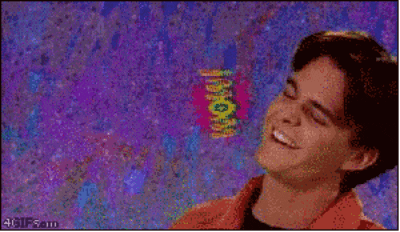

Hi there! Welcome to my super-cool website on the World Wide Web! This is my first home page, so please bear with me while I get things set up. This page is still under construction. Come back soon - I promise it'll be totally awesome!
Last updated: October 5, 1998
Cool Links
 This page has been visited 012345 times since 1997!
This page has been visited 012345 times since 1997!